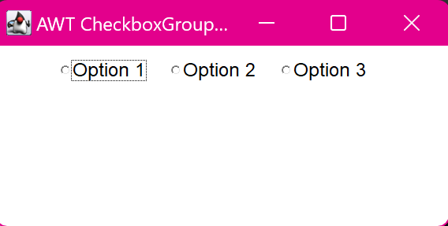

12. Create a simple AWT application that displays a CheckboxGroup with FlowLayout manager.
import java.awt.*;
import java.awt.event.*;
class main {
public static void main(String[] args) {
Frame frame = new Frame("AWT CheckboxGroup with FlowLayout");
CheckboxGroup group = new CheckboxGroup();
Checkbox checkbox1 = new Checkbox("Option 1", group, false);
Checkbox checkbox2 = new Checkbox("Option 2", group, false);
Checkbox checkbox3 = new Checkbox("Option 3", group, false);
frame.setLayout(new FlowLayout());
frame.add(checkbox1);
frame.add(checkbox2);
frame.add(checkbox3);
frame.setSize(300, 150);
frame.setVisible(true);
frame.addWindowListener(new WindowAdapter() {
public void windowClosing(WindowEvent we) {
System.exit(0);
}
});
}
}
